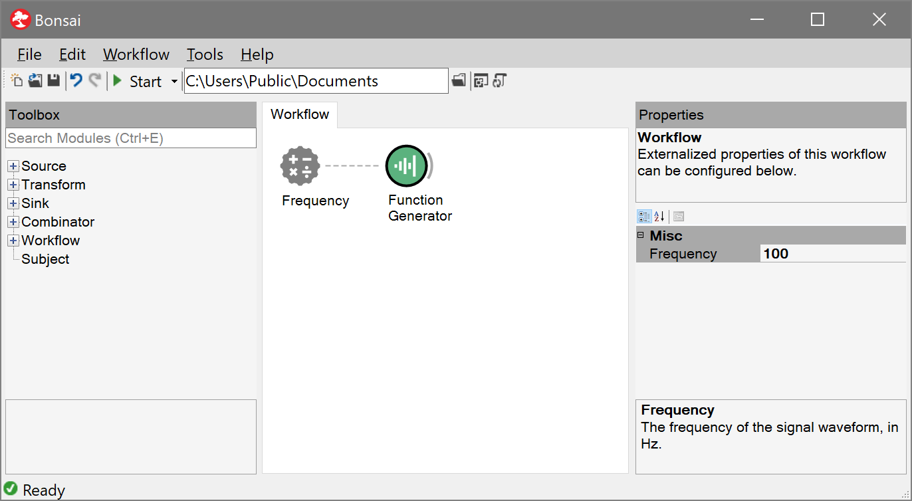

Property Mapping
Each Bonsai operator exposes a set of configuration properties that allow you to parameterize that operator's behaviour. These parameters can be configured manually from the editor Properties panel. However, there are times when you may need to map the properties of an operator dynamically from the output of other observable sequences.
As an example, imagine you wanted to continuously playback a sound WAV file to the speakers at a specified volume level. You might design a workflow that looks like the following:

Using the ConvertScale operator you could set the volume manually by changing its Scale parameter.
But imagine you wanted to design a variation of this workflow where the playback volume is now modulated continuously depending on some other variable, for example the horizontal position of the mouse cursor as it moves across the screen.
A simple way to compute the desired scale value would be to rescale the X coordinate of mouse movements to a range between zero and one:

However, how would you now connect the sequence of scale values computed from the mouse position to changes in the Scale property of the ConvertScale node?
Property mapping operators allow you to do exactly this. They are operators that take a single input sequence and react to notifications from that sequence by changing the values of the specified properties in the subsequent node. There are three types of property mapping operators, described below.
| Mapping Type | Description |
|---|---|
 |
Externalize one or more operator properties. The properties can be optionally named and will show up in the Properties panel for node groups. |
 |
Map multiple properties simultaneously. Individual members of input data items can be mapped to different properties in the target node. |
 |
Map multiple properties synchronized with input notifications. Same as above, but property changes are guaranteed to arrive simultaneously with input data. |
Externalized properties
The externalized mapping operator allows you to create externalized properties. The easiest way to initialize the mapping is from the right-click context menu when a single node is selected. Selecting a property will create the externalized mapping node or add it to an existing one.

After the specified property has been externalized, it can be subscribed to any input sequence which is compatible with the data type of the property. Every time the input sequence emits a new item, the externalized property will react by changing the target property to the incoming value.
Property values are updated independently of what the target operator might be doing at any point in time. Specifically, the connection between the externalized property and its target is not considered as an active input. This is indicated in the editor by the red coloured edge linking the property mapping operator to its target.
This means that property updates may happen even while the target operator is receiving input notifications from other nodes. Care must be taken to ensure that changing the property state in this way does not break the behaviour of the workflow.
Note
Some operators respond to changes in their parameters only at specific moments. For example, the parameters of the Timer operator must be set before the observable sequence is initialized. In this case, the input to the externalized property needs to be emitted immediately during the subscription phase for the mapping to work.
Externalized properties also have one more function when placed inside node groups, for example inside a NestedWorkflow. If they are given a name, they will be exposed as top-level properties of the node group. When the node representing that group is selected, all named externalized properties will show up in the Properties panel.
Mapping multiple properties
Multiple properties can be mapped simultaneously from the same input by using the PropertyMapping operator. You can select which properties to map by using the editors available in the Properties panel. For each mapped property you must specify its source, i.e. which members of the input data item are used to assign its value.
Note
If the type of the selected member does not match the type of the property, a conversion is attempted. If no compatible conversion is available, Bonsai checks whether it is possible to construct the corresponding data type from the selected members. For example, it would be possible to map a Point data type by selecting two numeric values from the input. In this case, the values would be used to construct a Point instance by assigning them to the X and Y fields.
Every time the input sequence sends out a new data item, all the specified property mappings are updated at the same time. This guarantees that property updates are sequentially performed in chunks. It is also possible to connect property mapping operators to multiple target nodes. In this case, the property updates will affect all nodes to which the operator is connected to.
Mapping properties from input data
Sometimes you need to synchronize the property update with the node inputs, i.e. you do not want the property mapping operator to change the property values in between input notifications.
For example, imagine a transform operator which is converting the input from one format to another, where the format specification is given by a set of operator properties. You may need the target format to change dynamically from time to time, but you may also need to guarantee that parts of the format specification do not change while the operator was converting some other input. The InputMapping operator allows you to do this by synchronizing property updates with input notifications.
Fundamentally, the InputMapping operator works exactly the same way as PropertyMapping, but now the connection from the mapping operator to its target node is considered as a proper input. It is possible to select which specific member of the original input data will be used as the input data to the target by setting the Selector property of InputMapping.
Whenever the original input sequence sends out a new data item, all the specified property mappings will be updated at the same time before this item is finally allowed to go through and notify the target. In this way, you can be sure that no property changes are performed between input notifications.